Instalar e entrar
- Baixe o instalador no botão Baixar grátis e abra o arquivo ChipEasy-Setup.exe.
- Se o Windows mostrar “O Windows protegeu o computador”, clique em Mais informações → Executar assim mesmo. O aviso aparece porque o instalador é novo, não porque há algo errado.
- Crie sua conta (nome, e-mail e senha). Com Manter conectado marcado, o programa entra sozinho das próximas vezes.
- Em Configurações, diga se você joga sozinho (aparece a aba Banca) ou por um time (aparece o Financeiro, com a divisão do lucro).
O programa se atualiza sozinho. Você não precisa baixar de novo a cada versão nova.
Por que montar a sessão antes de jogar
São cinco minutos antes de abrir as mesas. Em troca, você joga a sessão inteira com a cabeça só no poker.
Menos energia gasta
Nada de caçar torneio no lobby nem fazer conta de horário no meio de uma mão difícil. A lista já está pronta.
Nenhum registro perdido
O alarme toca antes de cada torneio e no fim do registro tardio. Você só clica em Registrei.
Números que se montam sozinhos
Com o prêmio de cada torneio lançado, Relatórios, Financeiro e Banca se preenchem sem planilha.
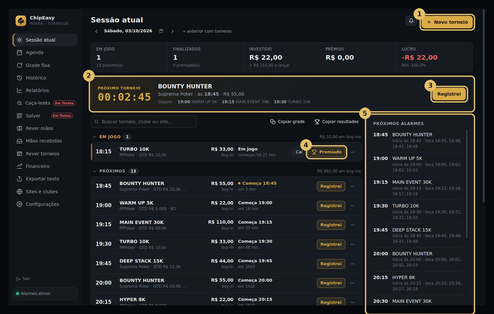
- Novo torneio: adicione os torneios do dia (ou puxe da sua grade fixa).
- Próximo torneio: contagem regressiva para o próximo registro e o que vem depois.
- Registrei: marque quando se registrar. O torneio passa para “Em jogo”.
- Premiado ou Caí: ao sair do torneio, um clique. “Caí” finaliza sem prêmio; “Premiado” abre o resultado.
- Próximos alarmes: todos os horários em que o programa vai te chamar.
Cadastrar um torneio
- Nome, site e clube. O clube serve para controlar o saldo de cada um.
- Data, horário e buy-in. Se tiver add-on ou registro tardio, preencha: o alarme avisa antes do fim.
- Repetir toda semana: marque para o torneio entrar na sua grade fixa e aparecer sozinho nas próximas semanas.
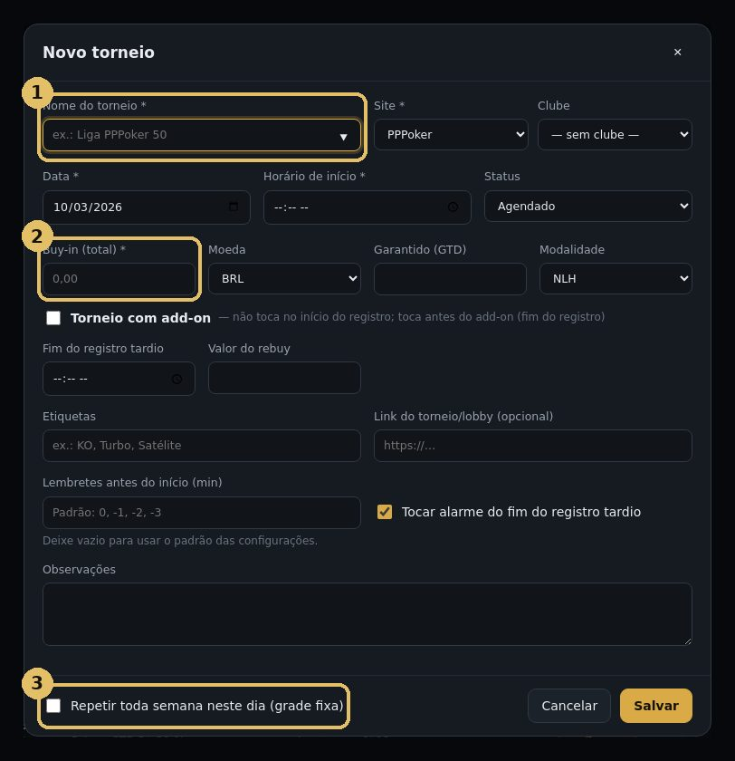
Grade fixa: monte uma vez, use sempre
Os torneios que você joga toda semana ficam aqui. Eles entram sozinhos na agenda do dia, já com alarme.
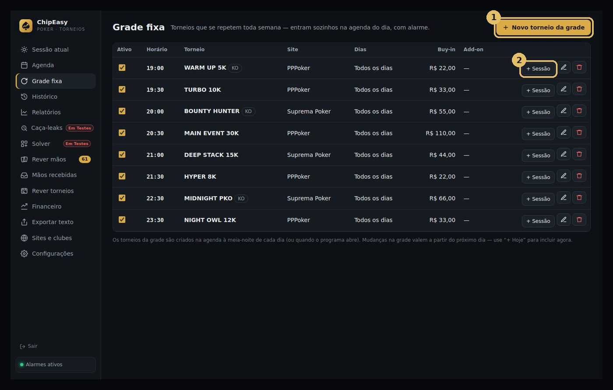
- Novo torneio da grade: escolha os dias da semana e o horário.
- + Sessão: joga hoje um torneio que não é do dia? Um clique coloca ele na sessão atual.
Lançar o resultado
- Colocação em que você terminou.
- Prêmio recebido (e bounties, se for KO). É este número que alimenta os relatórios e o financeiro.
- + mão: anote ali mesmo uma mão que você quer rever depois.
Lançou errado? Abra de novo em Editar resultado. Reentradas, rebuys e add-on também entram na conta do investido.
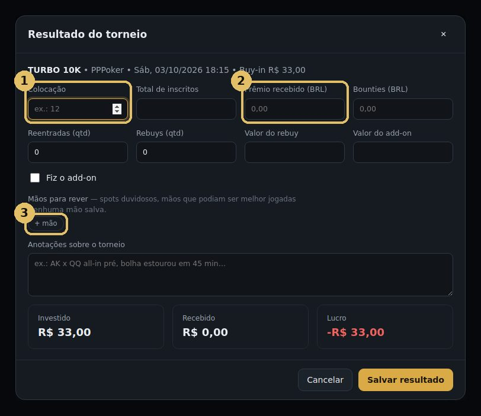
Relatórios e Financeiro
Você não digita nada aqui: tudo vem dos torneios e resultados que já lançou.
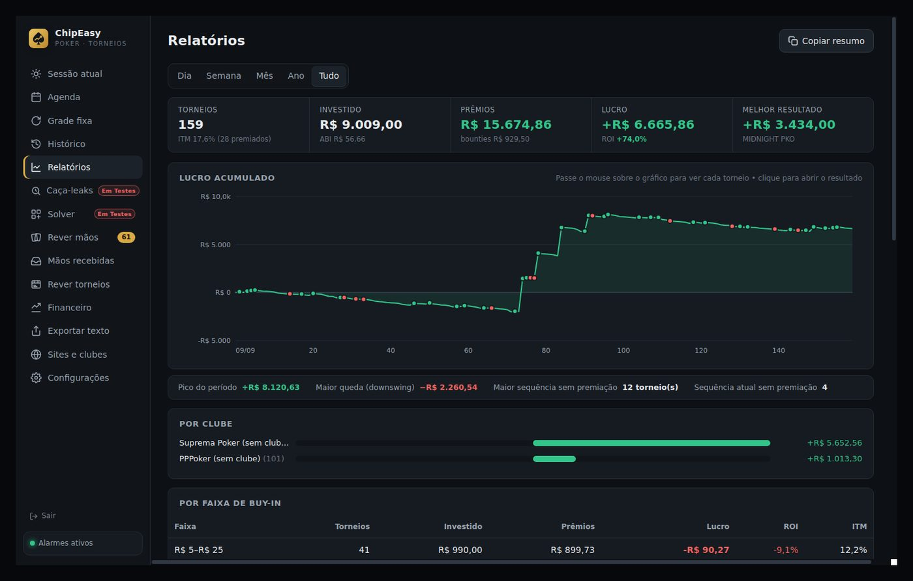
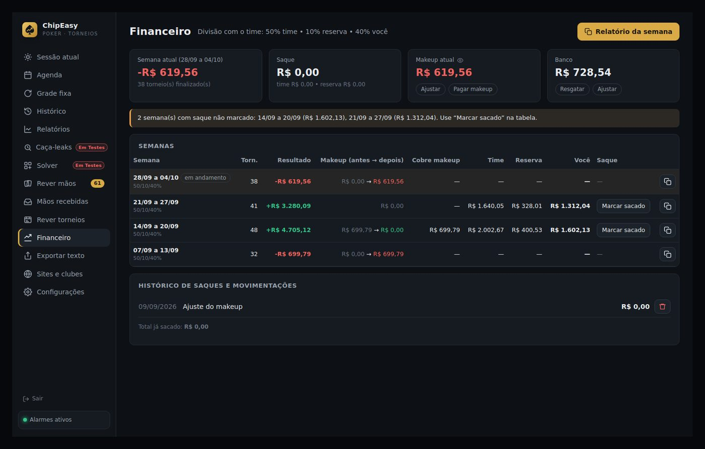
Conectar o histórico da PPPoker
Com o link conectado, o ChipEasy baixa suas mãos sozinho, a cada poucos minutos, e separa tudo por torneio. O link não é permanente: ele expira de tempos em tempos e aí é só colar um novo. Faça isso no começo de cada sessão, junto com a montagem da grade.
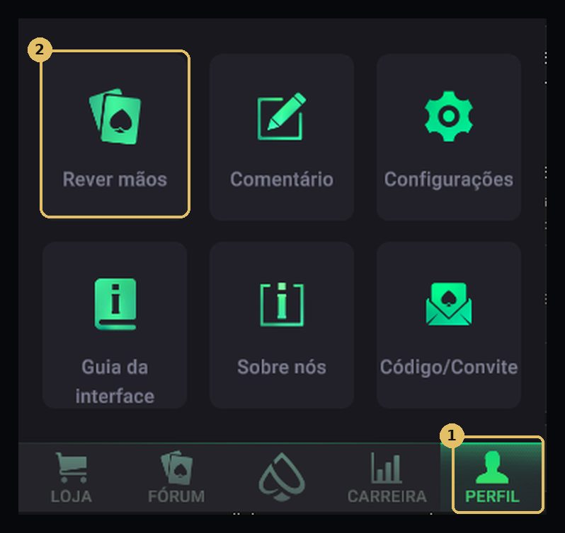
- No app da PPPoker, toque em Perfil.
- Toque em Rever mãos. Abre uma página com as suas últimas 200 mãos.
- Copie o link dessa página (o endereço que começa com replay.pppoker.net). No celular, use “Compartilhar → Copiar link” e mande para o seu PC.
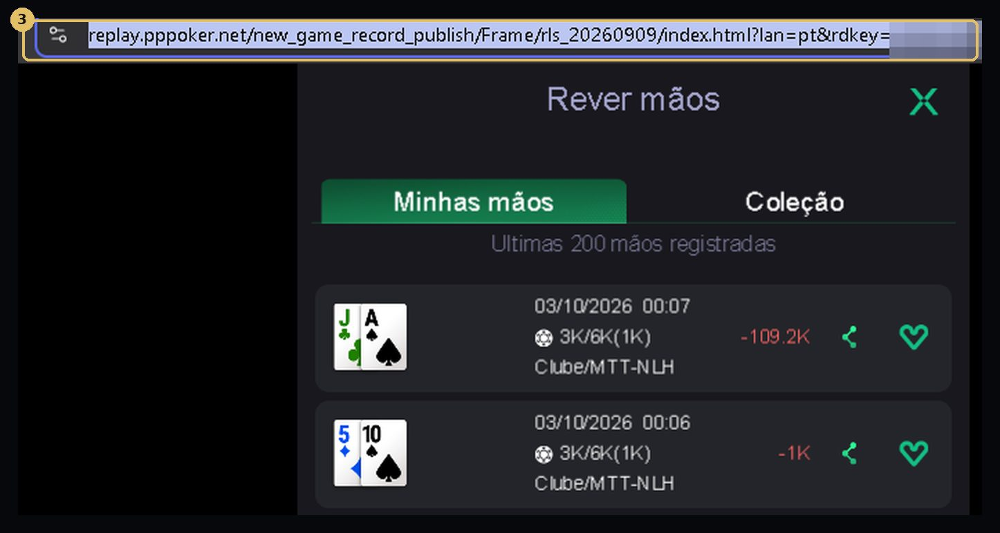
- No ChipEasy, abra Rever torneios e cole o link no campo.
- Clique em Conectar. Pronto: as mãos começam a chegar.
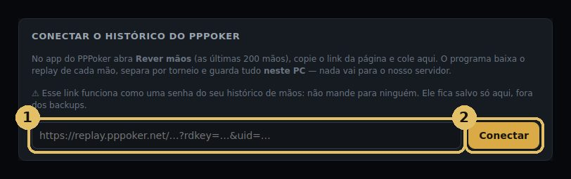
Em Rever torneios aparece “O link expirou”. Abra de novo Perfil → Rever mãos na PPPoker, copie o link novo e cole no mesmo lugar. As mãos que já foram baixadas continuam salvas.
Quem tiver o link vê o seu histórico de mãos. Não mande para ninguém. Ele fica guardado só no seu PC, fora dos backups.
Assistir os torneios depois
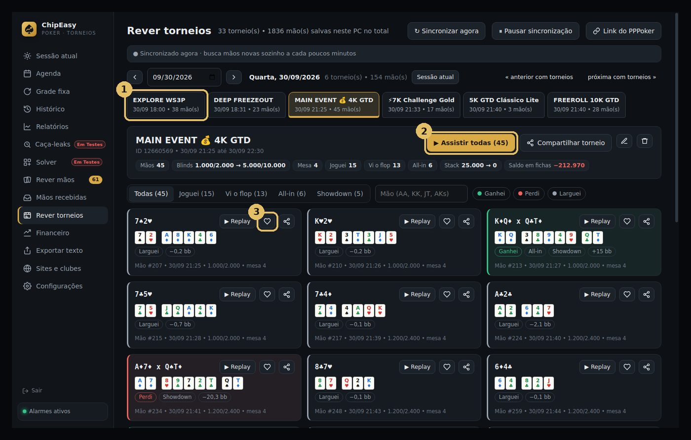
- Escolha o dia e o torneio. As mãos chegam organizadas por torneio, com blinds, mesas e o saldo em fichas.
- Assistir todas abre o replay do torneio inteiro, mão a mão. Use os filtros (Joguei, Vi o flop, All-in, Showdown) para ir direto ao que importa.
- ♡ guarda a mão em Rever mãos para estudar com calma.
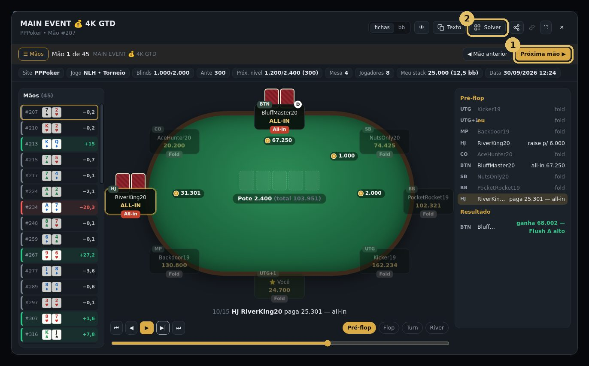
- Próxima mão: segue pelo torneio sem fechar o replay. A lista à esquerda mostra o resultado de cada mão.
- Solver: leva a mão direto para o solver, já na sua decisão.
Salvar uma mão sem perder o foco
Viu um spot que quer rever? Não pare o jogo para anotar tudo. Escolha o jeito mais rápido:
- ♡ em Rever torneios: a mão já está lá (o histórico atualiza sozinho). É só tocar no coração.
- + mão no resultado: ao lançar o resultado do torneio, escreva algo curto como “KJ x A10 no BB”.
- Colar link da mão: em Rever mãos, cole o link compartilhado de uma mão (PPPoker ou Suprema). O ChipEasy preenche tudo e pergunta de qual torneio ela é.
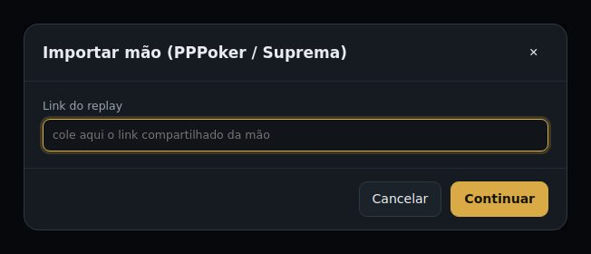
Dica: anote só o suficiente para lembrar. A revisão de verdade fica para depois da sessão, com a cabeça fria.
Mãos da Suprema
- No app da Suprema, abra o replay da mão e use a opção de compartilhar para copiar o link.
- No ChipEasy, vá em Rever mãos → Colar link da mão (ou Importar vários links para colar vários de uma vez).
- A mão é baixada com todas as ações e fica salva no seu PC, pronta para o replay e o solver.
Garimpo: as mãos que valem a sua revisão
Ninguém consegue rever centenas de mãos por sessão. O garimpo passa o solver em todas e separa as que fugiram da teoria, com o motivo.
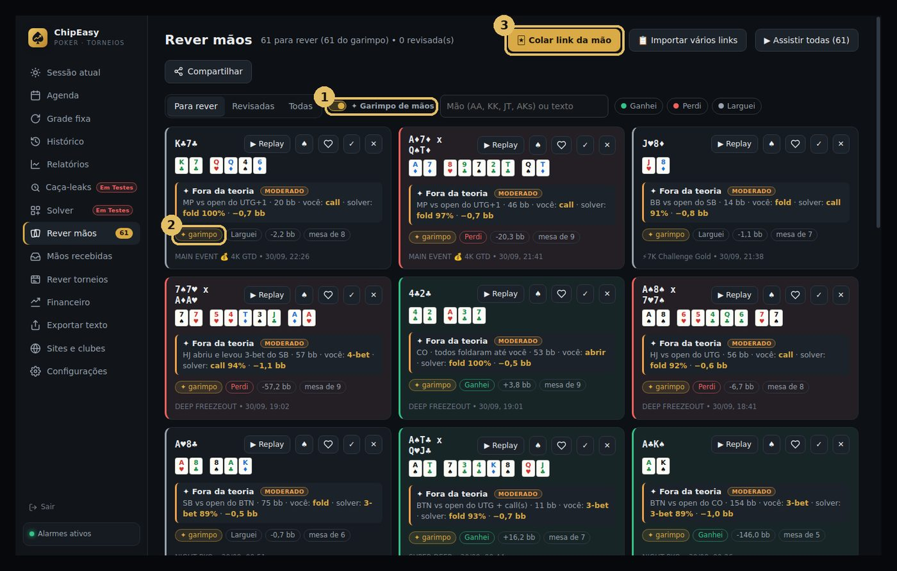
- ✦ Garimpo de mãos: ligado, as sugestões entram sozinhas em Para rever.
- Cada mão garimpada mostra o que você fez, o que o solver faria e quanto isso custou em bb.
- Colar link da mão e Importar vários links: para adicionar mãos de fora do histórico.
Depois de rever, marque a mão como revisada (✓). A lista fica só com o que falta.
Caça-leaks: onde você mais perde
Enquanto o garimpo olha mão a mão, o Caça-leaks olha o conjunto e mostra os padrões que mais custam fichas.
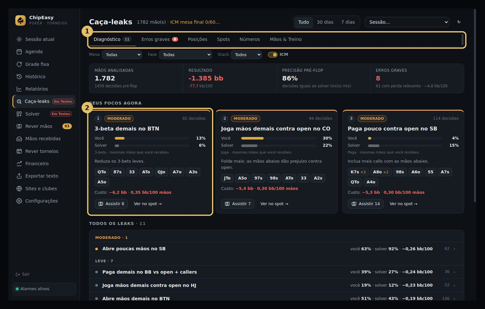
- Abas: Diagnóstico, Erros graves, Posições, Spots, Números e Mãos & Treino. Filtre por mesa, fase (mesa final, semi-final) e stack.
- Seus focos agora: os três leaks mais caros, com o seu número contra o do solver, as mãos envolvidas e o custo em bb/100. Clique em Assistir para ver as mãos.
Escolha um foco por semana. Corrigir um leak de cada vez rende mais do que tentar mudar tudo de uma vez.
Solver pré-flop
Ranges de open, 3-bet, call e all-in para 2 a 9 jogadores, de 10 a 60 bb, calculados pelo próprio ChipEasy.
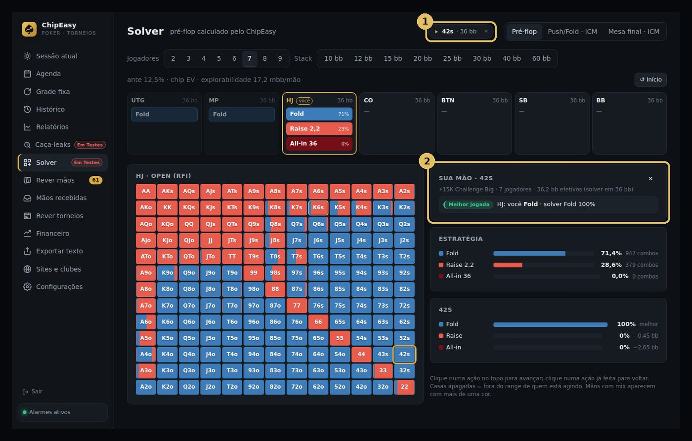
- Abriu o solver a partir de uma mão? O ícone da mão fica no topo: clique para rever o replay sem sair do solver.
- Sua mão: a decisão que você tomou comparada com o solver (melhor jogada, mix, imprecisão ou erro) e a perda em bb.
Clique nas ações do topo para andar pela mão; clique numa ação já feita para voltar. Casas apagadas na grade estão fora do range de quem age. Push/Fold · ICM cobre os stacks curtos.
Mesa final · ICM
Na mesa final, fichas não valem dinheiro na mesma proporção. Aqui o solver usa o stack real de cada jogador e a tabela de prêmios.
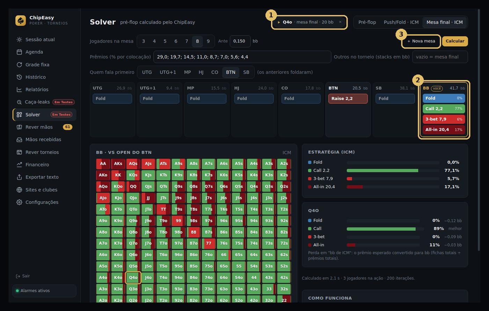
- Mão de mesa final ou semi-final? O solver abre aqui sozinho, com os stacks, o ante, quem fala primeiro e os prêmios já preenchidos.
- A sua posição aparece como você, parada na sua decisão, com a frequência de cada ação.
- + Nova mesa: limpa tudo para você montar uma mesa do zero.
Quanto mais jogadores ainda vão falar, mais demora o cálculo: de segundos (poucos jogadores) a uns 25 minutos (mesa cheia desde o UTG). Ele roda em segundo plano enquanto você usa o resto do programa.
Até onde confiar no solver
Ele trabalha com um modelo: o pré-flop é calculado em detalhe, mas o pós-flop é estimado, e os ranges dos adversários são os teóricos, não os reais da sua mesa. Por isso algumas respostas podem não ser exatas.
Use a dúvida a seu favor: quando o resultado parecer estranho, investigue. Compare com outros solvers, converse com seu coach ou time, procure o spot em vídeos e grupos de estudo. É assim que você descobre se a mão foi bem jogada, e é assim que se aprende de verdade.
Compartilhar mãos e backup
- Compartilhar: gere um código curto para mandar uma mão (ou um torneio inteiro) para alguém. Quem recebe abre em Mãos recebidas → Importar código. O código vale 2 dias.
- Exportar texto: monta um resumo da sessão pronto para colar no WhatsApp do time.
- Backup na nuvem: em Configurações, escolha uma pasta do OneDrive, Google Drive ou Dropbox. O ChipEasy copia seus dados para lá sozinho.
- Sites e clubes: cadastre seus clubes e acompanhe o saldo de cada um.
Ainda com dúvida? Veja as perguntas frequentes.